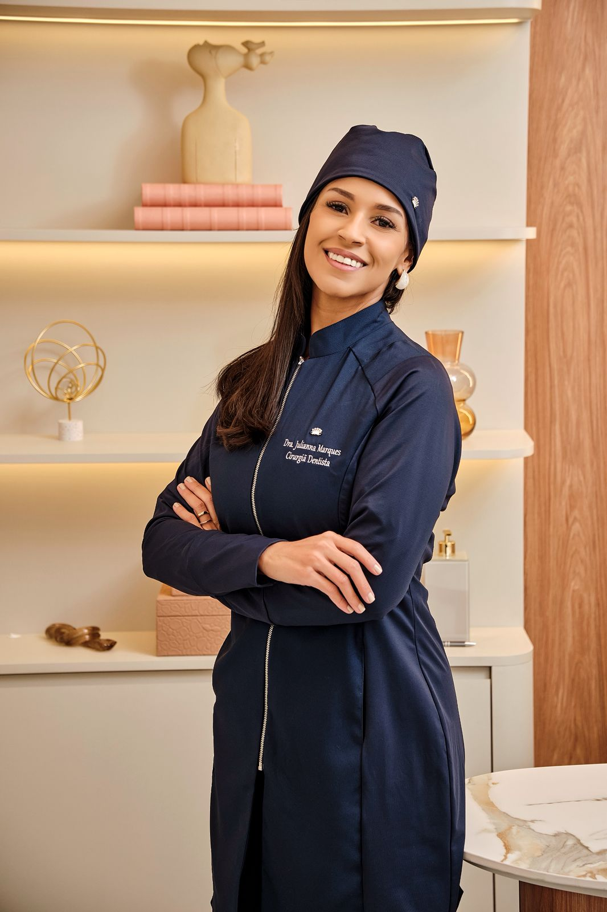
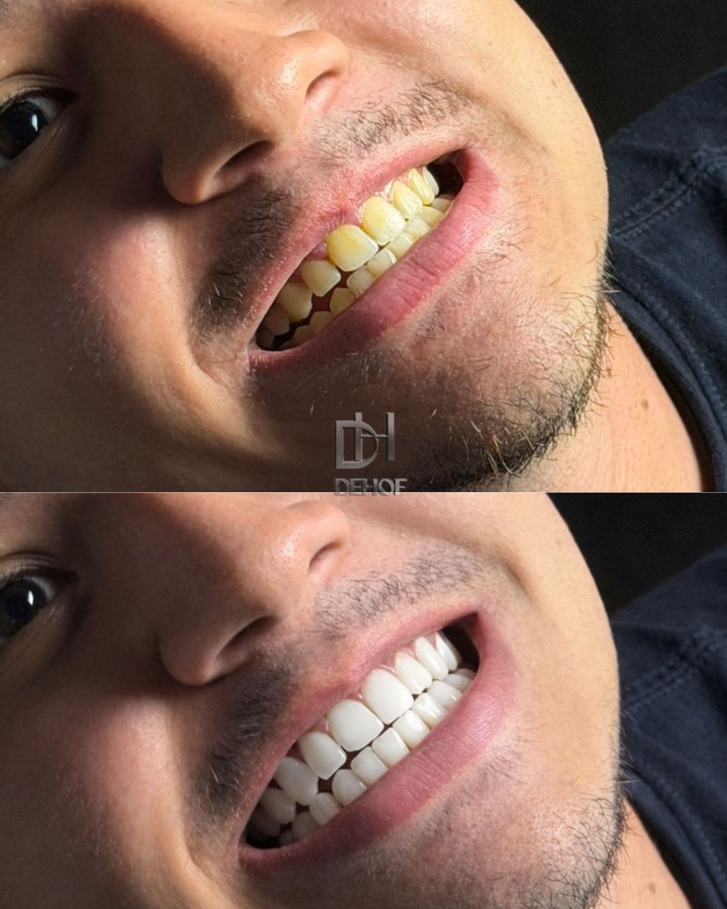

Saúde e harmonia em cada detalhe.
Redefinimos os padrões da odontologia estética através da união entre ciência, arte e tecnologia de ponta.
Atendimento com hora marcada em São Caetano do Sul. Cada caso exige avaliação individual.
Detalhe, método e um resultado que inspira.
Visagismo aplicado
O seu sorriso é planejado e personalizado de acordo com o seu rosto garantindo harmonia e naturalidade.
Planejamento digital
Prévia e previsibilidade. O plano orienta cada decisão: forma, proporção, cor e pontos de contato.
Condução clínica próxima
A Dra. Julianna acompanha a jornada do paciente do começo ao fim, com orientações claras e ajustes finos quando necessários.
Conforto e mínima intervenção
Sempre que possível, o foco é preservar estrutura dental e manter um processo confortável e seguro.
Vivências que inspiram
O maior reconhecimento do nosso trabalho é o brilho no olhar de quem recuperou a autoestima aqui.
Yasmim Siqueira
Avaliação no Google
"Dra. Juliana é uma excelente profissional. Consultório impecável, moderno e atendimento de primeira. Fiz clareamento e restaurações e ficou perfeito, super natural!"
Beatriz Oliveira
Avaliação no Google
"Explica tudo com clareza, cuidadosa e perfeccionista. Fiz minhas lentes de contato com ela e o resultado foi além do que eu imaginava. Consultório lindo e tecnológico."
Rafael Mendes
Avaliação no Google
"Melhor clínica da região. A transparência na avaliação me deixou muito seguro. O resultado da harmonização ficou muito sutil e natural. Atendimento nota 10."
Carla Fernandes
Avaliação no Google
"Equipe nota 10. A Dra. Julianna tem um olhar estético diferenciado. Me senti cuidada do início ao fim do tratamento. O consultório é maravilhoso."

Um ateliê para cuidar com calma.
Um espaço de imersão pensado para atender sem pressa, com total privacidade e tecnologias integradas — do diagnóstico digital ao acabamento artístico final.
Atendimento
Humanizado e individual, focado na sua experiência de bem-estar.
Tecnologia
Padrões rigorosos e equipamentos de ponta para precisão absoluta.

Dra. Julianna Marques
CRO‑SP 127.750 • Fundadora DEHOF
“Acredito em uma odontologia que respeita a identidade de cada paciente. Técnica e sensibilidade estética precisam caminhar juntas.”
Com formação sólida, especialização em Harmonização Orofacial pelo Instituto IOA Internacional – Jardins (CRO 16.0106) e um olhar voltado à naturalidade, a Dra. Julianna Marques concebeu a DEHOF como um ateliê de saúde, onde cada detalhe é planejado digitalmente.
O foco não é apenas o procedimento, mas a harmonia entre o sorriso e a expressão facial, utilizando as tecnologias mais avançadas de visagismo e reabilitação oral.
Especialidades
Indicação, técnica e acabamento. Se existir uma opção mais simples (e mais conservadora), ela entra na conversa.
Lentes de Contato
O Que É
Lâminas ultrafinas (geralmente em porcelana) coladas sobre o dente para ajustar cor, forma e proporções com acabamento natural.
Quando costuma fazer sentido
Para manchas que não resolvem com clareamento, dentes desgastados, assimetrias, diastemas e restaurações antigas.
O que muda no sorriso
Mais harmonia no conjunto (dente + lábio + rosto), com controle fino de textura para evitar o “branco artificial”.

Visão de Resultado Individual • Padrão DEHOF